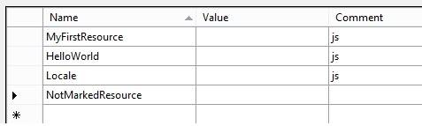
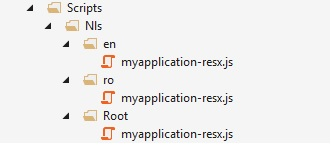

2014 © VeriTech Solutions
All Rights Reserved
ResxToJs is a MSBuild task that outputs specified keys from a resx file in RequireJS i18n format, available on nuget. Here you will find a setup guide for using it in your projects.
Install ResxToJs nuget package
PM> Install-Package ResxToJs
You should also make sure that you have installed the RequireJS.NET package
PM> Install-Package RequireJsNet
Add your .resx files to the project. In this example we have three files, Resource.resx, Resource.en-US.resx and Resource.ro-RO.resx.
Add some entries to your resources and mark the ones that you want to use in javascript with the js comment. You only have to add this comment in the Resources.resx file.
Create a new folder inside your scripts folder, named Nls. This is going to be the location where your javascript resource files will be generated.
Inside the Nls folder add a new javascript file, named myapplication-resx.js, in which we are going to list the cultures that we want to be outputted.
define({
'root': true,
'en': true,
'ro': true
});
Create a new folder inside your project, named ".build", in which you will add the file containing the task, named ResxToJs.targets, with the following content:
<?xml version="1.0" encoding="utf-8" ?>
<Project ToolsVersion="4.0" xmlns="http://schemas.microsoft.com/developer/msbuild/2003">
<UsingTask TaskName="ResxToJS.ResxToJSTask" AssemblyFile="..\bin\ResxToJS.dll" />
<Target Name="ResxForBuild" AfterTargets="AfterBuild">
<MsBuild Projects="$(MSBuildProjectFile)" Targets="Resources" Properties="DestinationDir=$(MSBuildProjectDirectory)" />
</Target>
<Target Name="ResourcesForDeploy" AfterTargets="CopyAllFilesToSingleFolderForMsdeploy">
<MsBuild Projects="$(MSBuildProjectFile)" Targets="Resources" Properties="DestinationDir=$(_PackageTempDir)" />
</Target>
<Target Name="Resources">
<ResxToJSTask RootResx="$(MSBuildProjectDirectory)\Resources\Resource.resx" RootJS="$(DestinationDir)\Scripts\Nls\myapplication-resx.js">
</ResxToJSTask>
</Target>
</Project>
Add the following line at the end of your .csproj to import the ResxToJs targets:
<Import Project=".build\ResxToJs.targets" />
Now you should build the project and check the Output window. If all goes according to plan you will see a message telling how long it took for the resources to be generated.
If you check the Nls folder you will see the structure generated by ResxToJs:
Because the resx.js files will be generated on each build, there is no need to keep them on the source repository, in order to exclude them from git you can add the following lines to .gitignore file, replace myapplication string with your project name.
# ignore ResxToJs generated files myapplication/Scripts/Nls/root/myapplication-resx.js myapplication/Scripts/Nls/ro/myapplication-resx.js myapplication/Scripts/Nls/en/myapplication-resx.js
If you want to retrieve the resources in your client side code you should use the i18n RequireJS plugin.
The current culture is determined on the server-side by the System.Threading.Thread.CurrentThread.CurrentUICulture property and attached to the requireConfig global object.
The following code should output an object containing the js marked keys from your resx file.
require([
'i18n!nls/myapplication-resx'
], function (resx) {
console.log(resx);
});
2014 © VeriTech Solutions
All Rights Reserved